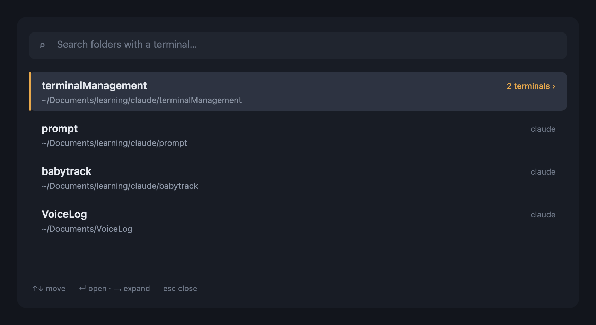

A dozen terminals open, one per project — some running Claude, some just a shell. Stop clicking through tabs. Press a hotkey, type a few letters, hit ↵. And when you ask for a folder you already have open, it jumps to it instead of piling on another.

The whole tool exists to kill exactly these.
You click through terminal after terminal hunting for the folder you were in.
You open a second (and third) terminal for a folder you already had, and the pile grows.
Fuzzy-search every folder with an open terminal. No more tab roulette.
Focuses the existing terminal for a folder; opens a new one only if needed.
A folder with a claude tab and a shell shows both — pick the exact one.
Manages both apps at once, with the exact tab brought to the front.
A native menu-bar app and a shell command. Both self-contained.
Reads live state each time — a tab you closed simply isn't in the list.
Same engine underneath, so they behave identically.
A native macOS app: a >_ menu-bar icon and a floating search panel.
A bash + zsh function for people who live in the terminal.
tm — fuzzy-pick a folder → focus ittm ~/dev/foo — reuse or open theretm ls · tm doctorNeeds macOS 13+, Node.js, and the Xcode command-line tools to build the app.
Prefer the terminal? . "$PWD/shell/tm.sh" in your ~/.zshrc and type tm.
No daemon, nothing to sync — it just reads live state.
AppleScript lists every open Terminal.app & iTerm2 tab and its TTY.
Each TTY → its foreground process → its working directory via ps + lsof.
Tabs grouped by folder, each labelled by what's running in it.
Focuses the exact tab — or opens a new window cd'd into the folder.